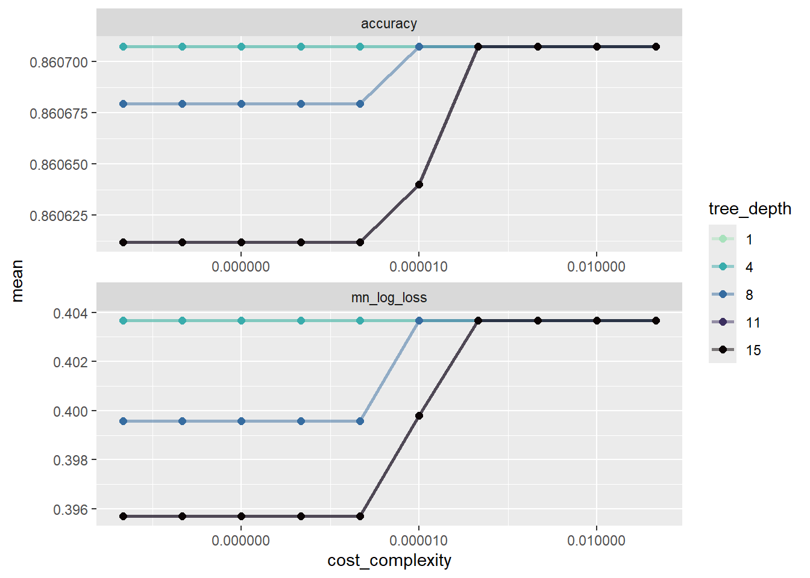

Evaluation and Testing of Classification Tree and Random Forest Models on the Diabetes Health Indicators Dataset
Data were sourced from Kaggle. The data were previously explored and reformatted in the Exploratory Data Analysis file. They are imported and re-formatted using the same code in this page for reproducibility.
Introduction:
The prevalence of Diabetes has increased from 200 million to 830 million cases worldwide from 1990 to 2022. In 2021 diabetes and diabetes related complications were implicated in over 2 million deaths. WHO
The Behavioral Risk Factor Surveillance System (BRFSS) is a survey that is conducted annually by the CDC and responses are collected from over 400,000 Americans. This survery has been conducted yearly since 1984. The dataset to be analyzed for this project (“diabetes_binary_health_indicators_BRFSS2015.csv”) contains 253,680 responses to the survey. There are three dependent variable levels, 0=no diabetes or only during pregnancy, 1=prediabetes, and 2= diabetes. There are two factor levels for the dependent variable; 0=no diabetes and 1=diabetes. There is class imbalance in the dataset and there are 21 feature variables. Diabetes Health Indicators Dataset
Most of the variables appear to be factor type variables (e.g., numbers are used to encode a class), and they were explored and reformatted during the EDA previously. In order to simplify the model fitting, I will explore “actionable” variables, or variables that the respondents can generally exert active control over in their lives (e.g.: Vegetable Consumption, Fruit Consumption, Smoking, Heavy Drinking, and Physical Activity), plus two intrinsic variables (Age and Sex). Each of these feature variables is a binary variable (Yes/No, Male/Female), except age is a factor type variable with 13 levels and was coerced to factor and values were renamed. The dependent variable (Diabetes_binary) is also a binary variable that takes on “Yes” or “No”. A response of “Yes” in the context of this dataset means that the respondent has diabetes and a response of “No” means that the respondent does not have diabetes.
The purpose of this modeling is to tune and compare regression tree and random forest models using 5 fold cross validation. The dataset will be randomly split into a training and test set. The models will be trained on the training dataset, then the best model from each family will be evaluated on the test dataset to then decide which model predicts unseen data the best.
Classification Trees
A classification tree utilizes binary recursive partitioning to seperate observations from a dataset into classifications based on the predictors that are being modeled. Every possible split for every variable in the model will be evaluated and the split that increases homoegeneity will be picked as the best. This will be repeated until the homogeneity cannot be increased within each the branch any further or a predetermined tree depth has been reached. This has the effect of making less and less relevent classifications as each branch contains less and less data and these branches are in turn describing phenomena that are unique to that particular dataset and not the population that it was drawn from. Classification Tree Description, Wikipedia. In this modeling excercise, we will use 5-fold cross validation to evaluate the classification tree on 5 (k) folds of the training dataset. The training set will first be seperated into a training and test dataset in a 70/30 ratio and the test dataset will be set aside until the end of model tuning to be used as “unseen” data to help avoid training to the data. This cross validation generally helps address the issue above in which smaller and smaller branches contain less relevent data by created seperate random samples of the training data to explore. Each fold is also seperated into a training and test dataset and a tree is fit on the fold training set, then tested on the test dataset. All kth fold models are then aggregated back into the final model. Tuning parameters are then evaluated, and in our case, the model with the lowest log-loss will be fit on the test dataset to compare to the random forest model.
Random Forest
A random forest model is an ensemble model that attempts to increase homogeneity in each branch similar to a classification tree, however, the random forest model does not evaluate all predictors at each node. Instead, the random forest model randomly selects (with replacement) a subset of the data, then on each subset it will build a tree. At each node, the algorithm will randomly select a pre-determined number of predictors (mtry()) to evaluate at each node base on a pre-determined predictor sample size. The training below will tune on the mtry() hyperparameter to see if there is a benefit (eg lower log-loss) for a given predictor subset size. The randomization and subsetting of the predictors for each partitioning helps the model to “see” less strong predictors that might otherwise always be overpowered during partitioning, as well as helps with the problem of overfitting that is inherent with single classification trees. Each of the classification trees is then combined by majority voting to generate a final model for each value of mtry() that was tested. The metrics for each model are then compared to each other and the model with the lowest log-loss is then selected to compare on the test dataset against the classification tree model.
Libraries
We’ll load libraries necessary for the modeling.
#load libraries.library(tidyverse)
Warning: package 'tidyverse' was built under R version 4.2.3
Warning: package 'ggplot2' was built under R version 4.2.3
Warning: package 'tibble' was built under R version 4.2.3
Warning: package 'tidyr' was built under R version 4.2.3
Warning: package 'readr' was built under R version 4.2.3
Warning: package 'purrr' was built under R version 4.2.3
Warning: package 'dplyr' was built under R version 4.2.3
Warning: package 'stringr' was built under R version 4.2.2
Warning: package 'forcats' was built under R version 4.2.3
Warning: package 'lubridate' was built under R version 4.2.3
── Attaching core tidyverse packages ──────────────────────── tidyverse 2.0.0 ──
✔ dplyr 1.1.4 ✔ readr 2.1.5
✔ forcats 1.0.0 ✔ stringr 1.5.0
✔ ggplot2 3.5.1 ✔ tibble 3.2.1
✔ lubridate 1.9.3 ✔ tidyr 1.3.1
✔ purrr 1.0.2
── Conflicts ────────────────────────────────────────── tidyverse_conflicts() ──
✖ dplyr::filter() masks stats::filter()
✖ dplyr::lag() masks stats::lag()
ℹ Use the conflicted package (<http://conflicted.r-lib.org/>) to force all conflicts to become errors
library(tidymodels)
Warning: package 'tidymodels' was built under R version 4.2.3
Rows: 253680 Columns: 22
── Column specification ────────────────────────────────────────────────────────
Delimiter: ","
dbl (22): Diabetes_binary, HighBP, HighChol, CholCheck, BMI, Smoker, Stroke,...
ℹ Use `spec()` to retrieve the full column specification for this data.
ℹ Specify the column types or set `show_col_types = FALSE` to quiet this message.
#create list of variables to change to factorfactors<-c("diabetesBin", "highBP", "highChol", "cholCheck", "smoker", "stroke", "heartProb", "physAct", "fruits", "veg", "etOH", "hlthCare", "noDoc", "genHlth", "diffWalk", "sex", "age", "edu", "income")#create list of variables to change to integersintegers<-c("bmi", "mentHlth", "physHlth")#use rename() to rename all variables for consistency and mutate() to change each list to appropriate data typedata1 <- data |>rename("diabetesBin"="Diabetes_binary","highBP"="HighBP","highChol"="HighChol","cholCheck"="CholCheck","bmi"="BMI","smoker"="Smoker","stroke"="Stroke","heartProb"="HeartDiseaseorAttack","physAct"="PhysActivity","fruits"="Fruits","veg"="Veggies","etOH"="HvyAlcoholConsump","hlthCare"="AnyHealthcare","noDoc"="NoDocbcCost","genHlth"="GenHlth","mentHlth"="MentHlth","physHlth"="PhysHlth","diffWalk"="DiffWalk","sex"="Sex","age"="Age","edu"="Education","income"="Income" ) |>mutate_at(factors, factor) |>mutate_at(integers, as.integer)#create list of yes/no factors to be coded where 0=no, 1=yesyesNo <-c("diabetesBin", "highBP", "highChol", "cholCheck", "smoker", "stroke", "heartProb", "physAct", "fruits", "veg", "etOH", "hlthCare", "noDoc", "diffWalk")#mutate_at the list yesNo and equate 0 to no and 1 to yes.data2 <- data1 |>mutate_at(.vars = yesNo,.funs = fct_recode,"Yes"="1","No"="0")data3 <- data2 |>#define levels for genHlthmutate(genHlth =fct_recode(genHlth,"Excellent"="1","Very Good"="2","Good"="3","Fair"="4","Poor"="5"),#define levels for ageage =fct_recode(age,"18 to 24"="1","25 to 30"="2","30 to 34"="3","35 to 39"="4","40 to 44"="5","45 to 49"="6","50 to 54"="7","55 to 59"="8","60 to 64"="9","65 to 69"="10","70 to 74"="11","75 to 79"="12","80 and Older"="13"),#define levels for eduedu =fct_recode(edu,"No School/Only Kindergarten"="1","Grades 1-8"="2","Grades 9-11"="3","Grade 12/GED"="4","College Years 1-3"="5","College Years >=4"="6"),#define levels for incomeincome =fct_recode(income,"Less than $10K"="1","$10K to less than $15K"="2","$15K to less than $20K"="3","$20K to less than $25K"="4","$25K to less than $35K"="5","$35K to less than $50K"="6","$50K to less than $75K"="7","Greater than $75K"="8"),#define levels for sexsex =fct_recode(sex,"Female"="0","Male"="1") )
Split the Data
We’ll split the data into a training and test set (70/30).
First, we’ll use the initial_split(), training(), and testing() functions to create the splits:
set.seed(10)#create split with 75% data in training set and 25% in test set, and name the setsdiabetes_split <-initial_split(data3, prop =0.7)diabetes_train <-training(diabetes_split)diabetes_test <-testing(diabetes_split)diabetes_train
# A tibble: 177,576 × 22
diabetesBin highBP highChol cholCheck bmi smoker stroke heartProb physAct
<fct> <fct> <fct> <fct> <int> <fct> <fct> <fct> <fct>
1 No No No Yes 24 No No No Yes
2 No No No Yes 18 No No No Yes
3 No No Yes Yes 23 Yes No No Yes
4 No No No Yes 30 Yes No No No
5 No No No Yes 25 No No No No
6 No No Yes Yes 26 No No No Yes
7 No No No Yes 20 No No No Yes
8 No Yes Yes Yes 22 Yes No Yes Yes
9 No No Yes Yes 26 Yes No No Yes
10 Yes Yes No Yes 23 No No No No
# ℹ 177,566 more rows
# ℹ 13 more variables: fruits <fct>, veg <fct>, etOH <fct>, hlthCare <fct>,
# noDoc <fct>, genHlth <fct>, mentHlth <int>, physHlth <int>, diffWalk <fct>,
# sex <fct>, age <fct>, edu <fct>, income <fct>
177,576/253,680 = ~ 70%, so that looks like we successfully created the right proportions for our training/test datasets.
177,576 rows in the training dataset, which is not evenly divisible by 5. Each fold will have 35515 observations, and one fold with have 35516.
Create 5 Folds (randomly “cut” the training data into 5 pieces)
The following code will create the folds needed to train trees for both our classification tree and random forest models. The folds will be used to create classification trees on each fold and the result will be combined to tune the models using lowest log-loss.
#create 5 folds from training datasetdiabetes_5_fold <-vfold_cv(diabetes_train, 5)
Training Models
We’ll create 1 recipe to preprocess the data…
Recipe
The recipe below will subset the training dataset for the variables specified in the model statement and tell the model what is predictors and what is the dependent variable, as well as specify the dataset that the data will come from.
#we'll create the recipe. We'll define the variables to use in the model by defining the response (diabetesBin), and the feature variables (smoker, fruits, veg, etOH, sex, and age). Prep and Bake used to view dataset, then commented out to create recipe.diabetes_rec <-recipe(diabetesBin ~ smoker + fruits + veg + etOH + sex + age + physAct, data=diabetes_train) #%>%#prep(training=diabetes_train) %>%# bake(diabetes_train)#diabetes_rec
Classification Tree Model
The classification tree model will attempt to predict classification of diabetesBin, or whether or not a respondent has diabetes, by partitioning the data by each predictor and minimizing the loss function. This will be done for every possible value of each predictor. Then the loss function will be calculated for each of these splits and the predictor value that leads to the highest purity in the one of the branches will be selected as the node. This process will then be repeated on each side of the node, creating more nodes until all the possible splits have been evaluated and or the model cannot be improved. The models from the training splits will then be combined and tuned using the tree depth and cost complexity parameter.
#define model engine and tuning parameterstree_mod <-decision_tree(tree_depth =tune(),min_n =20,cost_complexity =tune()) %>%set_engine("rpart") %>%set_mode("classification")#create workflow for regression tree model:tree_wfl <-workflow() %>%add_recipe(diabetes_rec) %>%add_model(tree_mod)
Next, we’ll create the tuning grid and specify tree_depth and cost_complexity as the hyperparameter to tune, as well.
#create tuning grid to tune on cost_complexity and tree depth.tree_grid <-grid_regular(cost_complexity(),tree_depth(),levels =c(10, 5))
Then, we’ll use tune_grid() with the tree_grid object from above. The metrics will be specifed within tune_grid(). This will fit the specified workflow to the dataset and specified hyperparameters for tuning and will be fit on each of the 5 folds.
#fit the classification tree model using the pre-defined workflowtree_fits <- tree_wfl %>%tune_grid(resamples = diabetes_5_fold,grid = tree_grid,metrics =metric_set(accuracy, mn_log_loss))
Then, we’ll plot the tree_fits metrics that were estimated in during fitting above.
#plot accuracy and mn_log_loss by cost_complexity across tree depthstreeFitTune <- tree_fits %>%collect_metrics() %>%mutate(tree_depth =factor(tree_depth)) %>%ggplot(aes(cost_complexity, mean, color = tree_depth)) +geom_line(linewidth =1.0, alpha =0.5) +geom_point(size =2) +facet_wrap(~ .metric, scales ="free", nrow=2) +scale_x_log10(labels = scales::label_number()) +scale_color_viridis_d(option ="mako", begin = .9, end=0)treeFitTune

It looks like log-loss is better a minimum cost complexity at a tree depth of 15, but accuracy is better at higher complexity.
Now, we will select_best to get the best model’s tuning parameters, then finalize the model and create a workflow that contains the best model with the lowest cost_complexity using finalize_workflow.
#collect best parameters based on mn_log_loss metrictree_best_params <-select_best(tree_fits, metric ="mn_log_loss")tree_best_params
#create final classification tree workflow using best parameters from above.tree_final_wfl <- tree_wfl %>%finalize_workflow(tree_best_params)
Now, we’ll fit the best regression tree model on the test dataset:
#use last_fit()on rental_splittree_final_fit <- tree_final_wfl %>%last_fit(diabetes_split,metrics =metric_set(accuracy, mn_log_loss))#collect metrics on the final_fit on the test dataset:tree_final_metrics <- tree_final_fit %>%collect_metrics()#display final classification tree metricstree_final_metrics
#extract workflow from final classification tree fit and plot treetree_final_model <-extract_workflow(tree_final_fit)#tree_final_model#plot treetreeFinalPlot <- tree_final_model %>%extract_fit_engine() %>% rpart.plot::rpart.plot(roundint =FALSE)
The classification tree only created a single leaf containing 100% of the data, as minimum log-loss is at this node. This is not very useful, even though it is somewhat accurate (~86%). Once the model is fit, it doesn’t allow for any more partitioning from the full dataset. This doesn’t tell us anything more than we already were able to ascertain from the EDA. Perhaps the Random Forest will give us some more insight by testing the smaller subsets of predictors with each partition.
On to Random Forest!
Now we’ll repeat the same steps as above to demonstrate the random forest model using the Tidymodels package.
First, we’ll specify the ranger model engine.
#specify ranger model engine, mtry as tuning parameter, ask model to return importance, and create classification type treesrf_mod <-rand_forest(mtry =tune()) %>%set_engine("ranger", importance ="impurity") %>%set_mode("classification")
Then, we’ll create the Random Forest workflow by adding the recipe and model to the workflow.
#create workflow by adding recipe and modelrf_wfl <-workflow() %>%add_recipe(diabetes_rec) %>%add_model(rf_mod)
Now, fit the CV folds to the random forest model define above.
#fit model using workflow, takes ~10 minutes to fitrf_fit <- rf_wfl %>%tune_grid(resamples = diabetes_5_fold,grid =4,metrics =metric_set(accuracy, mn_log_loss))
i Creating pre-processing data to finalize unknown parameter: mtry
We’ll select the best tuning parameter based on minimizing log-loss.
#create object that holds the parameter from best fit by minimizing log-lossrf_best_params <-select_best(rf_fit, metric="mn_log_loss")rf_best_params
Now…refit the test set with the best tuning hyperparamter from above.
#create workflow incorporating best parameters from above, fit workflow on full training datasetrf_final_wfl <- rf_wfl %>%finalize_workflow(rf_best_params)rf_final_fit <- rf_final_wfl %>%last_fit(diabetes_split,metrics =metric_set(accuracy, mn_log_loss))#collect final metrics and displayrf_final_metrics <- rf_final_fit %>%collect_metrics()rf_final_metrics
Now, we’ll extract the fit engine and plot importance of the predictors from the model fit to the entire training dataset:
#extract the final fit object, create table of importance from final fit object, and plot importance for each predictor.rf_final_model <-extract_fit_engine(rf_final_fit)#coerce importance to tibblerf_importance <-as_tibble(stack(rf_final_model$variable.importance)) #rename importance table variable namesnames(rf_importance) <-c("value", "term")#reorder importance by increasing valuerf_importance <-arrange(rf_importance, ("value"))#plot importanceimportancePlot <- rf_importance %>%mutate(term =fct_reorder(term, desc(value))) %>%ggplot(aes(x=term, y=value, levels = term)) +geom_bar(stat ="identity") +coord_flip()importancePlot
This model seems to offer more information that the k-fold cv classification tree on how the predictors help to explain the data. Age is the most important, followed by physical activity. This supports our EDA evaluation that the proportion of physically active respondents who have diabetes is roughly half of the non-physically active respondents who do not have diabetes.
Comparison of Model Families
Now, let’s compare the two model families using the tuning parameters that had the lowest log-loss from each family and determine which is best between the families using log-loss:
It looks like the Random Forest is the best model on the test dataset. The Random Forest model has the lowest log-loss. Both models have the same accuracy.
Use fit() to fit best (Random Forest) to full dataset.
Lastly, we’ll fit the best model, the Bagged Tree model, on the entire Dataset!
#define final model using the best rendom forest workflow from above and apply it to the full dataset.final_model <- rf_final_wfl %>%fit(data3)#extract final model fit enginefinal_model<-extract_fit_engine(final_model)#coerce importance to tibblefinal_rf_importance <-as_tibble(stack(final_model$variable.importance))#rename importance table variable namesnames(final_rf_importance) <-c("value", "term")#reorder importance by increasing valuefinal_rf_importance <-arrange(final_rf_importance, ("value"))#plot importance for full datasetfinalPlot <- final_rf_importance %>%mutate(term =fct_reorder(term, desc(value))) %>%ggplot(aes(x=term, y=value, levels = term)) +geom_bar(stat ="identity") +coord_flip()finalPlot